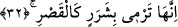
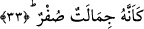

Bâzıları şöyle derler: Nefsin pis ve vahdet nûrundan kopuk gölgesi, nefs zâtının
gölgesi nedeniyle devamlı bir gölge değildir. Bu gölge tûba ağacının gölgesine
benzemez, insana rahatlık ve ferahlık sağlamaz. Oysa hoş ve vahdet nûruyla aydınlanmış
nefis ağacının gölgesi böyle değildir. Böyle bir nefs ağacı şeytânî güçler, yırtıcı,
paralayıcı ve hayvânî güçler şeklinde birbiriyle çelişik çeşitli kollara ayrılmış değildir.
32. O, saray gibi kocaman kıvılcım saçar.
“O” kollardan herbiri “saray gibi” büyük “kıvılcım saçar.” Bu kollar tıpkı büyük ve
kocaman saraylar gibi kıvılcım saçarlar ve bu kıvılcımlardan her biri birer saray
büyüklüğündedir. Bunların böylesine saray kadar büyük olduklarına ve bu tefsirimizin
isâbetli olduğuna “sanki onlar sarı bir erkek devedirler” âyet-i kerîmesi işâret
etmektedir.
Âyette yer alan “şerar” kelimesi, ateşin üzerinden dört bir tarafa saçılan
kıvılcımlardır. Bunlar tıpkı yıldız gibi etrafa saçılırlar. Nitekim Kamus’ta şerar
kelimesi açıklanırken bunun ateşin üzerinden sağa-sola sıçrayan kıvılcımlar olduğu
ifâde olunmuştur.
“el-Kasr” aynı zamanda bol odun anlamına da gelir. Kelime bu anlama geldiği için
İbn Abbas (r.a.) bu âyeti tefsir ederken “el-Kasr” ifâdesinin doğranmış büyük kereste
anlamına geldiğini söyler. İbn Abbas şöyle devam eder: Bizler o büyük keresteleri alır,
onları üç arşın boyunda veya daha büyük ya da daha kısa doğrar, sonra kışın yakmak
üzere istif ederdik ve bu doğradığımız odunlara “el-Kasr” derdik. Onlara bu ismi bir
zamanlar çok uzun, boylu boyuna ağaçları kesip kısalttığımız için verirdik. Burada
durup düşünmelidir. Bu ateşin dumanı ve kıvılcımları böyle olursa acaba içine
girenlerin hâli nice olur!
33. Her bir kıvılcım, sanki birer sarı deve gibidir.
Fethu’r-Rahman’da ifâde edildiğine göre “onlar” zamiriyle işâret edilen nesne,
“kıvılcımlar” kelimesi değil de “ateş” kelimesidir.
Âyette yer alan “cimale” kelimesi deve anlamına gelen “cemel” kelimesinin
çoğuludur. Cemel develerin erkeğine verilen isimdir. Deve sürüsünün içinde dişi
develer yoksa bunlara “cimale” denilir.
“Sufur”, “asfar” kelimesinin çoğulu olup siyah ile beyaz arası bir rengin adıdır. Bir
başka ifâdeyle “sufur” sarı renktir. Bu renk siyahtan beyaza daha yakındır. Bu nedenle
“sufur” kelimesi ile siyahlık anlamı da ifâde olunabilir. Âyet-i kerîmeye mânâ vermek